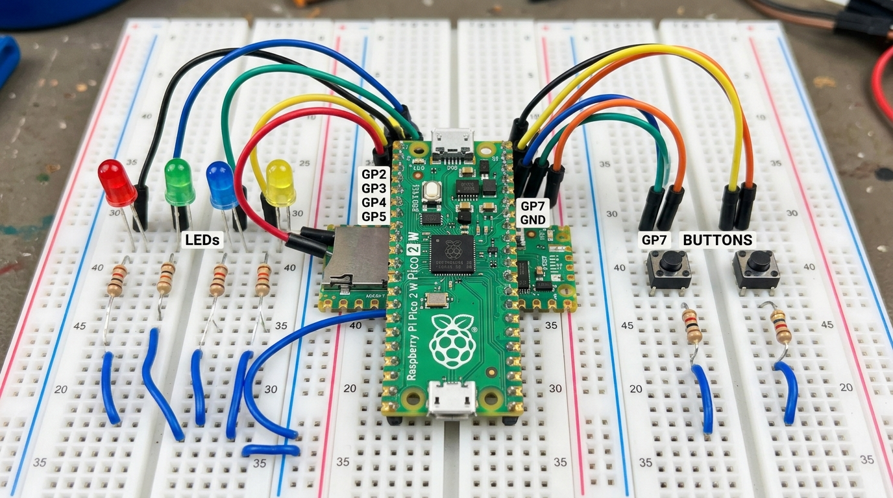

Buttons and Logic Gates with GPIO (RP2350)
Objective
Use GPIO digital inputs (buttons) to implement basic logic gates (AND, OR, XOR) in hardware by reading sio_hw->gpio_in with bitmasks, and use the same inputs to move a lit LED across a 4-LED array.
Materials and Components
- 1 × Raspberry Pi Pico 2 W
- 4 × LED (for the moving-LED exercise)
- 5 × 330 Ω resistor (current limiter for each LED)
- 2 × Push-button
- 1 × Protoboard
- Male-to-male jumper wires
- Micro-USB cable (programming and power)
Circuit Diagram
AND / OR / XOR (single output LED, two input buttons):
GPIO2 → LED → 220Ω resistor → GND
GPIO6 → Button A → GND (internal pull-down)
GPIO7 → Button B → GND (internal pull-down)

Diagrama de conexión para las compuertas AND, OR y XOR
GPIO2 → LED0 → 220Ω resistor → GND
GPIO3 → LED1 → 220Ω resistor → GND
GPIO4 → LED2 → 220Ω resistor → GND
GPIO5 → LED3 → 220Ω resistor → GND
GPIO6 → Left button → GND (internal pull-down)
GPIO7 → Right button → GND (internal pull-down)
Both buttons rely on the microcontroller's internal pull-down (gpio_pull_down()), so a pin reads 0 when unpressed and 1 when pressed — no external resistor needed on the buttons.
AND Gate
The LED turns on only when both buttons are pressed at once.
Source Code
#include "pico/stdlib.h"
#include "hardware/structs/sio.h"
#include <stdio.h>
int main(void) {
stdio_init_all();
const uint32_t MASK_LED = 1u<< 2;
const uint32_t MASK_BOTONES = (1u << 6) | (1u << 7);
gpio_init(2);
gpio_init(6);
gpio_init(7);
sio_hw->gpio_oe_set = MASK_LED;
sio_hw->gpio_oe_clr = MASK_BOTONES;
gpio_pull_down(6);
gpio_pull_down(7);
while (true) {
uint32_t entaadas = sio_hw->gpio_in;
int resultado = (entaadas & MASK_BOTONES);
printf("Botones: %d\n", resultado);
if (entaadas & 1<<6 && entaadas & 1<<7) {
sio_hw->gpio_set = MASK_LED;
} else {
sio_hw->gpio_clr = MASK_LED;
}
}
}
System Operation
gpio_in packs every pin's state into one 32-bit word. resultado masks out the two button bits just to print them over serial for debugging, but the actual decision is made by checking each button bit directly in the if: entaadas & 1<<6 and entaadas & 1<<7 both have to be non-zero for the condition to be true, which only happens when both buttons are pressed — AND logic, checked bit by bit instead of against a combined mask.
| A | B | LED (A AND B) |
|---|---|---|
| 0 | 0 | 0 |
| 0 | 1 | 0 |
| 1 | 0 | 0 |
| 1 | 1 | 1 |
Results
The LED stays off unless both buttons are held down together; releasing either one turns it off immediately. The serial monitor also prints the masked value of entaadas & MASK_BOTONES on every loop, useful for checking the raw bits while testing.
Conclusions
Checking each button bit separately inside the if (entaadas & 1<<6 && entaadas & 1<<7) works just as well as comparing against a full mask, and reads a bit closer to plain logical AND. Adding the printf made it easy to confirm what the register was actually reading before trusting the LED's behavior.
OR Gate
The LED turns on if at least one button is pressed.
Source Code
#include "pico/stdlib.h"
#include "hardware/structs/sio.h"
#include <stdio.h>
int main(void) {
stdio_init_all();
const uint32_t MASK_LED = 1u<< 2;
const uint32_t MASK_BOTONES = (1u << 6) | (1u << 7);
gpio_init(2);
gpio_init(6);
gpio_init(7);
sio_hw->gpio_oe_set = MASK_LED;
sio_hw->gpio_oe_clr = MASK_BOTONES;
gpio_pull_down(6);
gpio_pull_down(7);
while (true) {
uint32_t entaadas = sio_hw->gpio_in;
int resultado = (entaadas & MASK_BOTONES);
printf("Botones: %d\n", resultado);
if (entaadas & MASK_BOTONES) {
sio_hw->gpio_set = MASK_LED;
} else {
sio_hw->gpio_clr = MASK_LED;
}
}
}
System Operation
Only the condition changes from the AND version: instead of requiring both individual bits, it's enough for entaadas & MASK_BOTONES to be non-zero — true as soon as either button bit is set, which is exactly OR's definition. The same printf from the AND version is kept here for checking the raw masked value while testing.
| A | B | LED (A OR B) |
|---|---|---|
| 0 | 0 | 0 |
| 0 | 1 | 1 |
| 1 | 0 | 1 |
| 1 | 1 | 1 |
Results
Pressing either button (or both) lights the LED; it's off only when neither is pressed.
Conclusions
Going from AND to OR here just meant switching the condition back to checking the combined mask instead of both bits individually — same register read, different comparison.
XOR Gate
The LED turns on only when exactly one of the two buttons is pressed.
Source Code
#include "pico/stdlib.h"
#include "hardware/structs/sio.h"
#include <stdio.h>
int main(void) {
stdio_init_all();
const uint32_t MASK_LED = 1u<< 2;
const uint32_t MASK_BOTONES = (1u << 6) | (1u << 7);
gpio_init(2);
gpio_init(6);
gpio_init(7);
sio_hw->gpio_oe_set = MASK_LED;
sio_hw->gpio_oe_clr = MASK_BOTONES;
gpio_pull_down(6);
gpio_pull_down(7);
while (true) {
uint32_t entaadas = sio_hw->gpio_in;
int a=(entaadas & (1u << 6))!=0;
int b=(entaadas & (1u << 7))!=0;
int resultado = (a ^ b);
printf("Botones: %d\n", resultado);
if (resultado) {
sio_hw->gpio_set = MASK_LED;
} else {
sio_hw->gpio_clr = MASK_LED;
}
}
}
System Operation
XOR needs two valid combinations (01 and 10), so a single mask comparison won't cut it. Each button is extracted separately into a clean 0/1 value (a and b), then combined with ^, which is 1 only when the two differ. This time resultado is the actual XOR output, not just a debug value, so the same variable drives both the printf and the LED.
| A | B | LED (A XOR B) |
|---|---|---|
| 0 | 0 | 0 |
| 0 | 1 | 1 |
| 1 | 0 | 1 |
| 1 | 1 | 0 |
Results
The LED lights up for A-only or B-only, and stays off when both or neither are pressed.
Conclusions
XOR needed a different approach than AND/OR since no single mask value captures both valid combinations — separating the bits into a and b and using ^ was the simplest match for its truth table.
Moving LED
Two buttons shift a single lit LED across a 4-LED array (GPIO2–GPIO5), wrapping around at the ends instead of stopping.
Source Code
#include "pico/stdlib.h"
#include "hardware/structs/sio.h"
#include <stdio.h>
int main(void) {
stdio_init_all();
const uint32_t MASK_LED = 0xF << 2;// bits 2,3,4,5 = 0b111100
const uint32_t MASK_BOTONES = (1u << 6) | (1u << 7);
gpio_init(2);
gpio_init(3);
gpio_init(4);
gpio_init(5);
gpio_init(6);
gpio_init(7);
sio_hw->gpio_oe_set = MASK_LED;
sio_hw->gpio_oe_clr = MASK_BOTONES;
gpio_pull_down(6);
gpio_pull_down(7);
int counter = 0;
int f1= 0;
int f2= 0;
while (true) {
uint32_t entradas = sio_hw->gpio_in;
int a = (entradas & (1u << 6)) != 0;
int b = (entradas & (1u << 7)) != 0;
if (a && !f1) {
counter++;
if (counter > 3) counter = 0;
f1 = 1;
} else if (!a && f1) {
f1 = 0;
}
if (b && !f2) {
counter--;
if (counter < 0) counter = 3;
f2 = 1;
} else if (!b && f2) {
f2 = 0;
}
sio_hw->gpio_clr = MASK_LED;
sio_hw->gpio_set = (1u << (2 + counter));
sleep_ms(15);
}
}
System Operation
counter tracks which of the 4 LEDs is lit (0–3), redrawn each loop with 1u << (2 + counter) to land on GPIO2–GPIO5. Instead of blocking with a while until the button is released, each button gets its own flag (f1 for button 6, f2 for button 7) that only allows one increment/decrement per press: the flag goes high the instant the button is detected pressed, and only resets once it's read as released again. A sleep_ms(15) on every loop keeps the polling from running too fast. Button 6 increments counter and wraps back to 0 after 3; button 7 decrements it and wraps to 3 after going below 0.
Results
The LED shifts one step per press in either direction, and instead of stopping at GPIO2 or GPIO5, it wraps around to the opposite end when a button is held past the limit.
Conclusions
Switching from a blocking while (gpio_get(...)) to a press/release flag per button (f1, f2) achieves the same single-step-per-press behavior without freezing the main loop, and made it straightforward to add wrap-around instead of clamping at the edges.